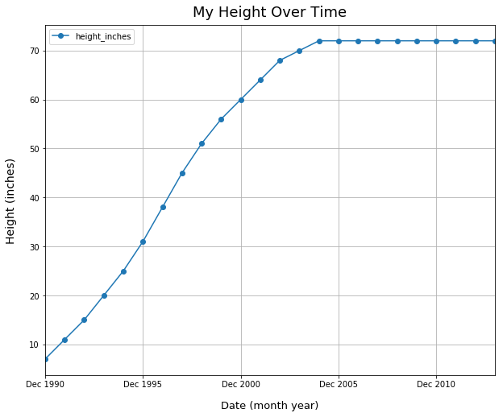

When to Use Line Plots
- Jun 11 • 3 min read
- Key Terms: line plots
Line plots are often best to illustrate the change in a variable over time.
Unlike bar plots, I think the variable in line plots should not be a sum or count metric. For example, I would use a line plot for visualizing temperature data over time because temperature is just a single recorded value.
Import Modules
import pandas as pd
import matplotlib.pyplot as plt
%matplotlib inline
Example: Historic Weather Monthly Averages in San Francisco
I want to see the general trend of the change in temperature for the months in San Francisco, California.
Record Weather Data in Python Lists
average_lows = [46, 48, 49, 49, 51, 53, 54, 55, 55, 54, 50, 54]
average_highs = [57, 60, 62, 63, 64, 67, 67, 68, 70, 69, 63, 57]
months = [date.strftime("%b") for date in pd.date_range(start='1/2017', end='1/2018', freq='M')]
Plot Monthly Weather Data
df = pd.DataFrame({'month': months, 'average_high': average_highs,
'average_low': average_lows})
df.set_index('month').plot(kind='line', figsize=(8, 7), grid=True, style='o-')
plt.title("Historical Monthly Averages in San Francisco", fontsize=18, y=1.01)
plt.xlabel("Month", fontsize=13, labelpad=15)
plt.ylabel("Temperature (degrees Fahrenheit)", fontsize=14, labelpad=15)
plt.legend(fontsize=13);

Explanation of Historical Monthly Averages Plot
The coolest months in San Francisco tend to be December to February while the warmest ones tend to be June to October.
Example: Change in Height Over Time
As a child, when I did yearly checkups at my doctor's office, my doctor recorded my height. Below, I plotted fictional data of my height over time.
Create Data for Month-Year Values and Height
month_years = [date.strftime("%b %Y") for date in pd.date_range(start='12/30/1990', end='12/31/2013', freq='A')]
heights_inches = [7, 11, 15, 20, 25, 31, 38, 45, 51, 56, 60, 64, 68, 70, 72, 72, 72, 72, 72, 72, 72, 72, 72, 72]
Plot Change in Height Over Time
df2 = pd.DataFrame({'month_year': month_years, 'height_inches': heights_inches})
df2.set_index('month_year').plot(kind='line', figsize=(10, 8), grid=True, style='o-')
plt.title("My Height Over Time", fontsize=18, y=1.01)
plt.xlabel("Date (month year)", fontsize=13, labelpad=15)
plt.ylabel("Height (inches)", fontsize=14, labelpad=15);

Explanation of Height Over Time Line Plot
I grew very rapidly until about December 2002, then only grew a couple inches over the next two years, and by 2004, I stopped growing in height.